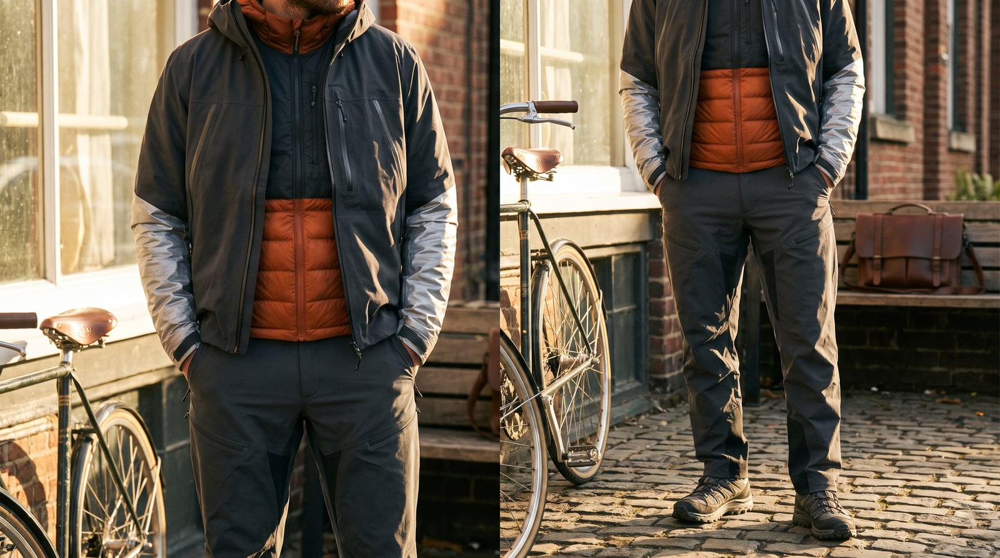
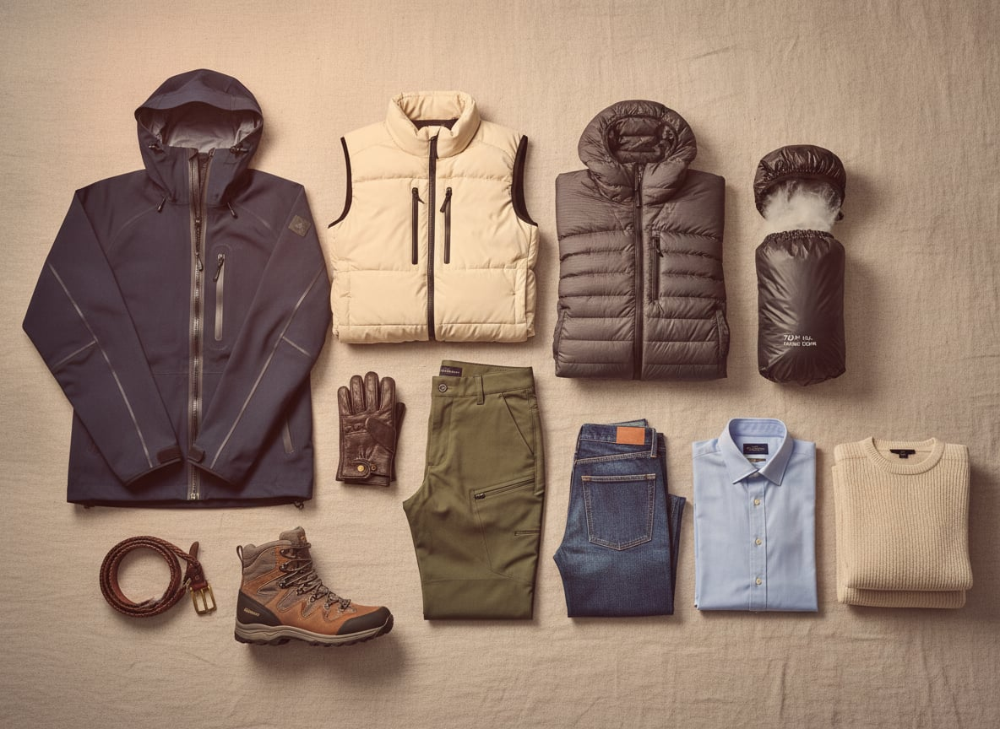

Technical outdoor clothing spent decades as pure equipment — Arc'teryx, founded in British Columbia in 1989, built its reputation on climbing harnesses and shells engineered for people who genuinely needed them to work at altitude, no fashion involved — before a cultural shift in the 2010s, sometimes called gorpcore, moved the same gear off the trailhead and onto the sidewalk. The joke in the name (GORP, trail mix) undersold how serious the underlying garments actually were; the humor was about context, not the clothes.
The trademark features remain genuinely functional even once they've left the mountain: seam-taped waterproof shells, articulated sleeves built for a full range of motion, a palette chosen for visibility in bad weather rather than a mood board. Technical vests, packable down, and boots built for uneven terrain get worn on perfectly flat sidewalks, and work exactly as well there.
It suits people who value performance over performance-of-taste — who'd rather their jacket actually work in a downpour than merely look like it might. There's a specific kind of confidence in it: dressing for the worst-case scenario, indoors and out, and simply not needing it to look effortless while doing so.
Arc'teryx built its reputation from 1989 on shells engineered for people who genuinely needed them to work at altitude — seam-taped construction and articulated patterning that had nothing to do with fashion until gorpcore moved the same gear onto the sidewalk decades later.
Genuine waterproofing at an accessible price, heavier and less packable than premium options.
Shop this →Real technical performance from established outdoor houses.
Shop this →The construction and fabric technology most of the category is measured against.
Shop this →A sleeveless technical layer lets this wardrobe add warmth and pocket capacity without restricting arm movement — originally designed for climbers who needed their arms completely free, adopted for its silhouette as much as its function once it left the mountain.
Genuine synthetic fill at an accessible price.
Shop this →Recycled synthetic insulation from the house most associated with reliable technical layers.
Shop this →Premium insulation and cut, worn as much for silhouette as warmth.
Shop this →Ultralight down that compresses into its own pocket was originally an alpinist's solution to pack-weight limits — the same jacket that once mattered ounces at a time on an ascent now gets worn, uncompressed, to the office.
Genuine down fill and real packability at an unusually low price.
Shop this →The highest fill power and most technical shell fabric the category reaches.
Shop this →Built for uneven, unpredictable terrain, technical trail footwear moved onto flat city sidewalks once its aggressive tread and cushioning proved just as comfortable for standing on concrete all day as for actual hiking.
Genuine trail performance at a broadly accessible price.
Shop this →More considered cushioning and cultural cachet beyond pure function.
Shop this →Designer collaborations on genuinely technical platforms.
Shop this →A hiking or climbing pant built with articulated knees and a gusseted crotch for full range of motion became streetwear once its stretch and durability proved more comfortable for daily life than most non-technical trousers.
Genuine stretch-woven fabric at an accessible price.
Shop this →Better articulation and more durable technical fabric.
Shop this →The construction and fabric technology most of the category is measured against.
Shop this →Lighter, more breathable technical layers in the same palette, sun protection taken as seriously as insulation ever is.
The full layering system comes together -- base layer, technical vest, waterproof shell -- exactly as designed, exactly as practiced.
The waterproof shell is the whole reason this wardrobe exists; genuinely, unglamorously, completely prepared for this.
The heaviest version of everything -- insulated boots, a proper down layer, gaiters -- this is the wardrobe's actual reason for being.
The most technical, least worn piece in the closet, saved for an outdoor industry event rather than anything indoors -- formality here means newest, not fanciest.
Patagonia, the Dolomites, and any range with a peak still on the list. Vacation and expedition are the same word.
Jon Krakauer, mountaineering memoirs, and gear reviews read with the seriousness other people reserve for stock picks.
Whatever's on the playlist for a long approach — often nothing at all, in favor of just the wind.
Gear drying everywhere, a wall of topographic maps, and furniture that's second to the equipment closet in both size and care.
Actual mountaineering, trail running as cross-training, and a gear-maintenance ritual performed with real reverence.